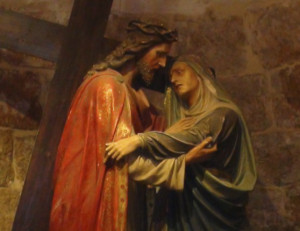
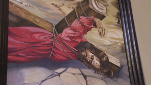
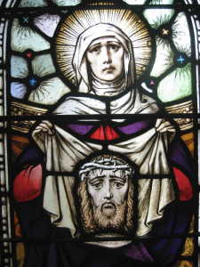

The devotion of the Stations of the Cross can be traced to the late 4th century when pilgrims flocked to the Holy Land from all parts of the world to visit the land of Jesus. The most important place they visited was the Church of the Holy Sepulcher, which the Emperor Constantine built in 335 AD atop Calvary and the tomb of Jesus.
Pilgrim processions to this church were common.
Egeria, a nun from Gaul who visited the Holy Land in the 4th century, recalls walking with other Christians in a procession on Holy Thursday from the garden of Gethsemane to the Church of the Holy Sepulcher, where they celebrated Jesus’ death and resurrection.
The Via Dolorosa
The gospels recall incidents that occurred when Jesus was condemned and made his way to Calvary, but since the Jerusalem of his day was almost completely destroyed by Roman armies in 70 AD, only a few places, like the place where he died and was buried, were really known to early Christian pilgrims.
Over the years, pilgrim processions– beginning at the ruins of the Fortress Antonia and ending at the church of the Holy Sepulcher–were accepted as the way Jesus went to his death. The route was known as the “Via Dolorosa,” the “Sorrowful Way;” Today, it winds through the crowded areas of Jerusalem’s Old City, and pilgrims still prayerfully travel it.
“Stations” recalling specific incidents that took place as Jesus went to Calvary developed along this venerable route. Most of the 14 traditional stations found there today and in churches throughout the world are taken from the gospels, above all, from St. Luke’s account.
But other incidents are not mentioned in the gospels, for example his three falls, his meeting with his mother, his meeting with Veronica who wipes his face with a cloth. Where did these scenes come from? They came from pilgrims devoutly meditating on the passion of Jesus.
John’s gospel reports that Mary stood by the cross of Jesus. (John 19,25-27) Wouldn’t she been among the crowd accompanying him to Calvary and wouldn’t they have met on the way? Pilgrims walking that way believed she did.
Jesus would be very weak during his passion after the scourging he received from Pilate’s soldiers. Why else was Simon of Cyrene pressed into carrying his cross? As they traveled the rough winding streets of the Via Dolorosa, pilgrims came to believe that he fell more than once.
The story of Veronica is not found in the gospels, but in early eastern apocryphal writings, like the Acts of Pilate, which tells of a woman named Veronica who possessed a cloth imprinted with the face of Jesus. Pilgrims from the western church returning to Europe passed her story on.
The story highlights the role of women during his passion and death. Matthew and Mark begin their accounts of the passion with the story of an unknown woman who anoints Jesus with precious ointment at Bethany, at the same time that Judas and others are plotting his death. (Matthew 26, 6-13; Mark 14,3-9)
As he went to Calvary, “A great number of people followed him and among them where women were beating their breasts and wailing over him. “ (Luke 23,27) On Calvary, “Many women were also there looking on from a distance.” (Matthew 27,55) Women attended his burial and returned on Easter Sunday to finish anointing his body. (Matthew 28, 1-10)
The gospels acknowledge the role of women, a customary role, in the death and resurrection of Jesus. Can we see the story of Veronica as symbolic of what all women did then? As a reward for ministering to the One who suffered, died and rose again, they discovered the face of God.
